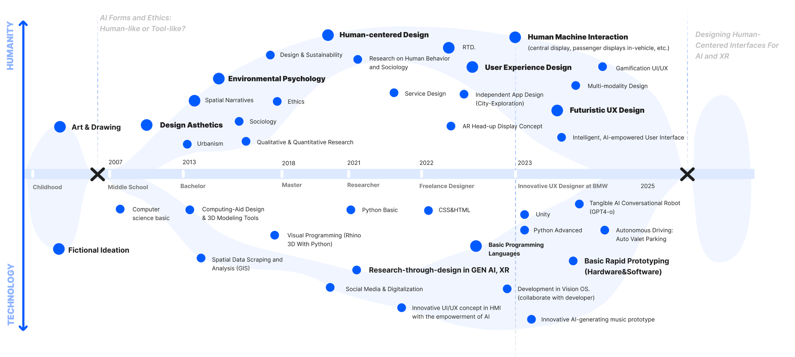

Hi! I am an independent researcher, UX designer, prototyper. My focus is on Human Machine Interaction(HMI), human-AI interaction including LLM-based interactive system and human-centered autonomy driving(ADAS). Regarding which, I developed bunch of theoretical and empirical exploration projects in vehicles, emotional robots, and wearable XR devices.
About Me
Groundbreaking takes time. Over the past 11 wholehearted dedicated years, it’s the accumulation of small, meaningful innovations in human-technology interaction intersected with human-centered design that approach my ambition: to build things that "touch people”.
My HTI Experience
Since beginning of 2023, I‘ve been UX specialist and prototyper in BMW Skylab the human-machine interaction design team and usability lab with all core design functions at BMW R&D center in Shanghai. My focus is on the intersection of HMI and cutting-edge technologies such as LLM, autonomous driving(ADAS), extended reality(XR). Empowered by rigorous desktop research and user study methodologies, I sharpen my expertise in regarding topics of Auto Valet Parking, LLM-based voice assistant, gamification and multimodal interactions. Collaborating with worldwide, cross-domain technologist, product owners and suppliers, I led these projects and pushed many of them forward towards a trusty, safe, inclusive, and user-centered and intelligent system. Moreover, as a rapid prototyper, I’m experienced at building full-functional, prototypes (software & hardware) in BMW driving simulation lab with programming language of Python, C. These ideas have been tested, iterated based on platforms including BMW iDrive 8, iDrive X and Panoramic Drive BMW, and next-level HMI system in 2029.
Technical Advancement With Continuous Learning
In recent years, I have actively pursued a structured and disciplined approach to expanding my technical skillset, with a particular focus on programming, machine learning, and human-computer interaction technologies. This commitment has been driven by my ambition to bridge the gap between design creativity and emerging technologies within the field of Human-Technology Interaction.
To this end, I have completed several rigorous online training programs, including: The Complete Python Pro Bootcamp (Udemy, 56.5 hours), through which I acquired comprehensive proficiency in Python programming and its applications in data handling and prototyping; Complete Web & Mobile Designer (Udemy, 26 hours), which equipped me with practical knowledge in HTML, CSS, and responsive interface design for both web and mobile platforms; Applied Data Science with Python Specialization (University of Michigan, on going), where I explored advanced analytical techniques and machine learning models for interpreting user data; Machine Learning Specialization (Stanford University, Deep Learning.AI, ongoing), further strengthening my understanding of core machine learning principles and their relevance to user-centered research.
Figure. My asserted certificates and courses(Completed).
In parallel with these studies, I have conducted independent research and prototyping initiatives that integrate technical development with user experience design. One such example is Mood Radio, a tangible conversational robot developed using a Raspberry Pi and OpenAI’s voice-to-voice API. This project involved the creation of a bespoke prompt-engineering framework to shape expressive timbre and emotional responsiveness in AI-generated speech, resulting in a fully interactive, emotionally attuned voice interface.
Another representative project is DriveRiff, a generative AI music system designed to respond in real time to driving behavior. By integrating vehicle control inputs (e.g., accelerator and brake pedals) with the central display and audio output, and employing the Soundraw API alongside the SocketIO protocol, I developed a prototype capable of delivering immersive, adaptive audio experiences based on dynamic user states.
Together, these experiences reflect not only my technical growth but also my deepening interest in the creative and ethical dimensions of Human-AI collaboration. They embody my evolving identity as a full-stack designer and HTI researcher—someone eager to explore new forms of interaction by combining design sensibility with technological fluency.
My Background
“Create fearless, investigate scientifically” shapes my profile. My inherent sensitivity has given me a subtle perspective to observe people and reflect on social phenomena through art empathetically. My creativity has flourished with 55 art creation in 23 years. My talent in human-centered design was advanced, crossing fields from physical to digital, from public service to UI/UX and game play. The driving force, however, stems from my love of science fiction in movies from Stanley Kubrick and video game like BioShock in childhood. There’s a spark of inspiration when first seeing Apple’s Knowledge Navigator video on my father’s first laptop at age eight. The way Apple depicted AI assistant in 1975 with interactive touchable interface fascinated me. It raised my ethical reflection towards user-centric AI: designing AI as "human mate" versus "tool". The ultimate goal’s been rooted: to innovate interaction between human and technology.
Design thinking is a journey of self-liberation. It’s the start point of my innovation of human-technology interaction. It strengthens my creativity with logic, from comprehensive demographic and sociological analysis to conclude with user-centered solutions. I vividly recall my first design class during my freshman year, when Professor Shao told me, "To design is to forget standard answers and find your way out." It's from the mindset revolution that I released my imagination with independently ideating and converging thinking. As a result, I earned top GPA (4.78/5), 8 scholarships, 6 design awards, and graduating with honors. The early knowledges in integrated social science in urban design supports me to be a designer with broader perspective, blending reflections on human revolution in design practice, and to create the future driven by technology. Specifically, courses of Behavioral Psychology sharpened my focus on the interaction between human behaviors and physical-digital integrated environment.
Scientific research is a journey of cosmic adventure. It bridged the gaps left by design, igniting my curiosity and imagination. It's the COVID-19 lockdown period in Milan in 2020, that I solidified my pursuit of academic research. "The process outweighs the outcome." It was a time of peaceful meditation through reading over 2,000 academic works to continuously challenge my previous perceptions and explore towards the uncertainty. As a result, I conducted 200+ user interviews, analyzed 12,000+ behavioral records. The three-year strict academic training not only authored me 8 publications but also equipped me with robust skills in qualitative methods such as behavioral taxonomy and conceptual frameworks, which are fundamental mindsets for advancing human-centered interaction research. Programming improvement is a journey of disciplined growth. It approaches me to concrete vision of human-technology interaction in AI, XR and game development with six years continuous effort. My foundation in computing-aid design tools, such as visual programming with Python, space syntax
, Interactive 3D modeling in Blender, Rhino and C4D, and GIS spatial data analysis, has been foundational in my educational career. Further basic web design skills through HTML, CSS and swift UI collaborated with developer, as proved in my independent cafe-founder app Cofforum, have liberated my UI/UX design into reality in my project. Overall, six years of disciplined self-learning transformed me from a novice to a full-stack UX designer mastering in Python. It's a miracle to build my website where all my UX insights intersect. For example, in AR Ride, I proposed a “context-aware” AR interface for riders in food delivery scenario towards safety. As an innovative project co-creating with Alibaba, Eleme, I as UX researcher grounded in systematic research on Augmented Reality hardware and software. I’m committed to improve my programming skills in Tampere University for my further vision in gamified, multi-modal interaction in AI and XR.

Figure. My career path in Human-Technology Interaction.